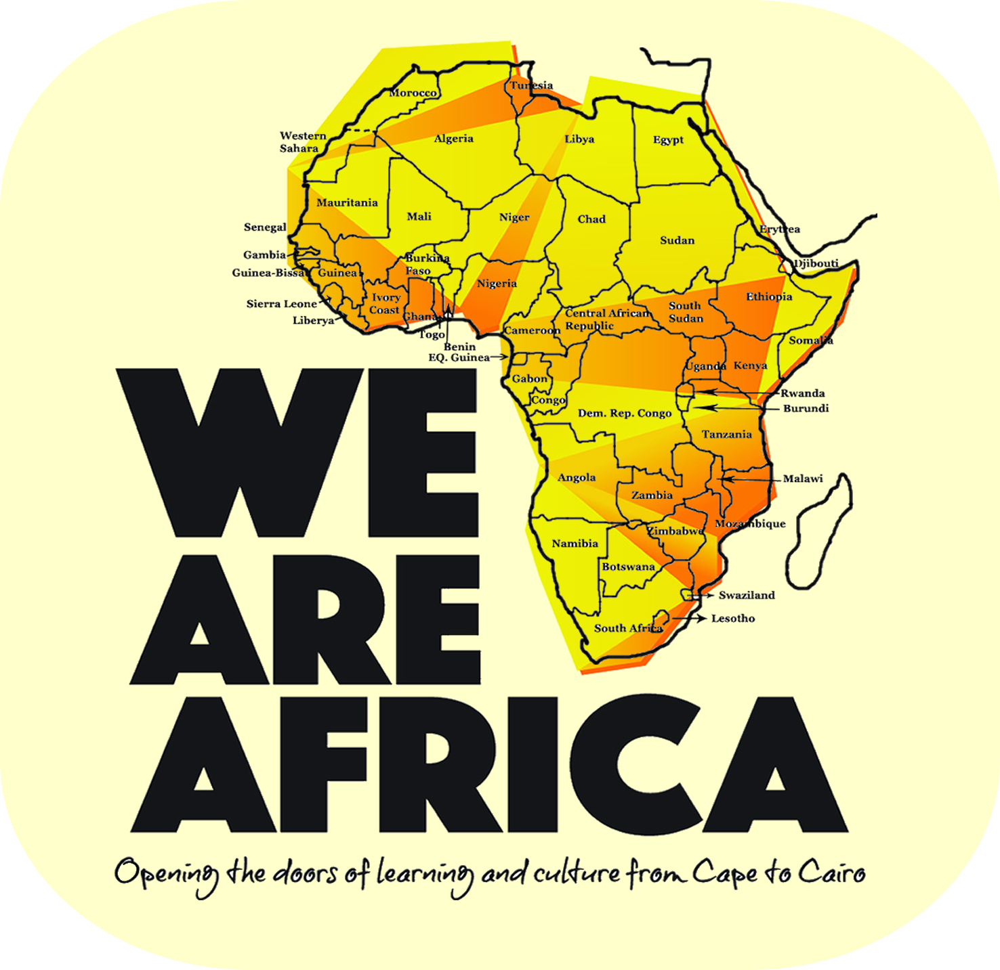

Interactive Map of Africa
Hover over countries to see their names and click to learn more!
About Africa
Africa is the world's second-largest continent and second-most populous continent. At about 30.3 million km2 (11.7 million sq mi) including adjacent islands, it covers 6% of Earth's total surface area and 20% of its land area. With 1.3 billion people as of 2018, it accounts for about 16% of the world's human population.
The continent is surrounded by the Mediterranean Sea to the north, the Isthmus of Suez and the Red Sea to the northeast, the Indian Ocean to the southeast and the Atlantic Ocean to the west.